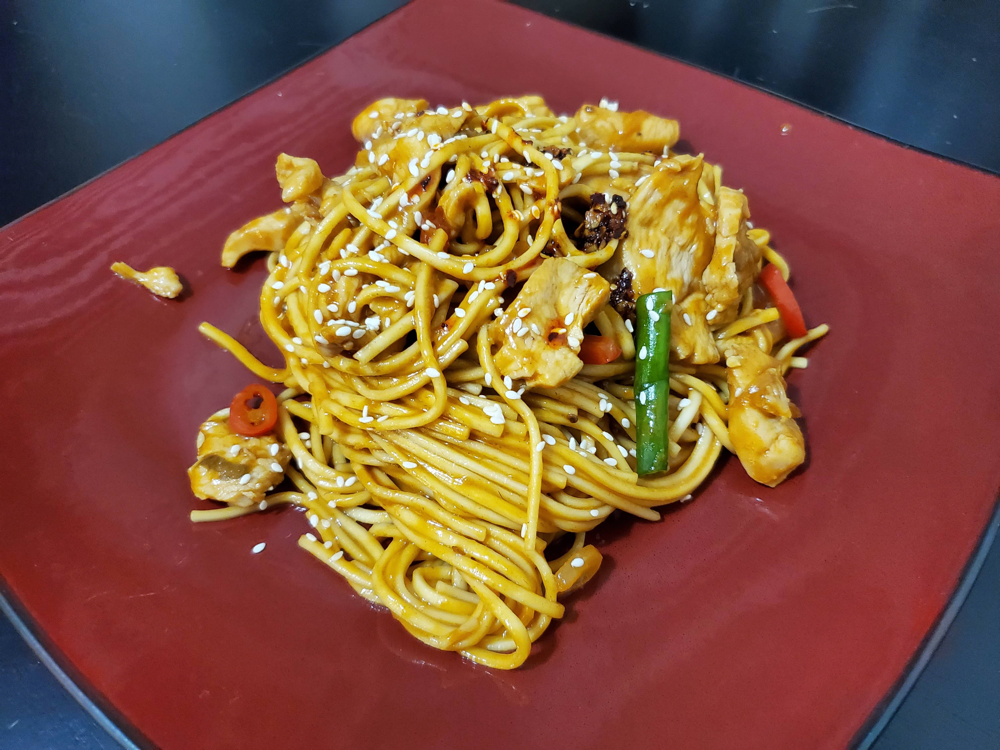

Nice spicy, savory and creamy dish that I make in bulk for meals throughout the week.
If you love spicy food then be sure to give this a try. Most people use maple syrup in their peanut noodles but I opted for brown sugar instead. The prik nam pla is totally optional. This stuff will open your pores and clear your sinuses. I'm the kind of madman who needs that AND some chili crunch oil. I found a jar at an asian market that has black truffles mixed in as well.
Heres what you'll need:
- 1 pound dry egg noodles
- 1 pound chicken breast
- 1/2 cup peanut butter
- 1/4 cup soy sauce
- 1/4 cup chopped green onion
- 3 tbsp minced onion
- 3 tbsp chopped hot peppers (you can use whichever you want. I used finger peppers)
- 2 tbsp fish sauce
- 1 tbsp peanut oil
- 1 tbsp brown sugar
- 1 tbsp sriracha
- 1 tsp chili crunch oil
- 1 tsp minced garlic
- 1 tbsp diced thai chili's
- 3 tbsp fish sauce
Prik Nam Pla
Heres what you'll do:
- - In a bowl mix together the peanut butter, soy sauce, first measure of fish sauce, and brown sugar. Set aside
- - In a boiling pot cook the egg noodles until al-dente
- - While the pasta is cooking dice the thai chilis and let them soak in the second measure of fish sauce
- - Cut the chicken breast into thin strips. Mince the garlic and onion, and cut the peppers and green onion
- - In a wok (or a regular pan) add the peanut oil and heat to medium high heat
- - Fry the chicken until fully cooked, then add the garlic and onion and peppers and saute lightly
- - Add the sauce and heat in a boil then ad the green onions and mix right before you add the pasta to heat
- - Plate up your noodles and add the chili crunch oil and a spoonful of the prik nam pla. ***VERY SPICY***